Grafana Guide: Stat, Gauge and Bar Gauge
|
This content was generated with the assistance of AI and should be verified against the official documentation before being relied on in production. |
Checked on 2026-11-11 against Grafana 13.3.x.
What you build
You add three panels to the dashboard Bookshelf (guides). A stat named Error ratio shows the share of failed requests as one big number with a sparkline, and shows the text No errors while the ratio is zero. A gauge named Connection pool usage shows how much of the database connection pool is in use. A bar gauge named Requests per second by URI draws one bar per route of the Bookshelf service. The three panels read a number where the time series of the earlier guides draws a history, which is what a dashboard header needs.
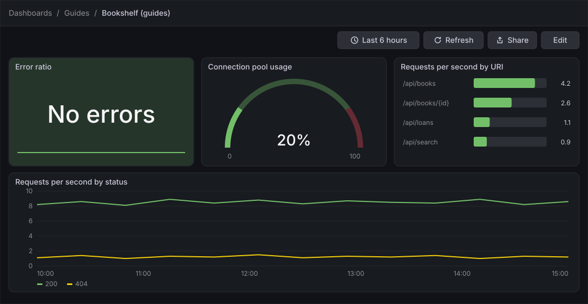
Before you start
-
Start the Grafana profile of the hands-on lab and wait about a minute:
cd lab docker compose --profile grafana up -d -
Open http://localhost:3000, sign in as
adminwith the passwordadmin, and click Skip when Grafana 13.3 asks you to update the default password. -
Do the previous guide, Time series panels, or at least the first-dashboard guide: this guide adds panels to the dashboard Bookshelf (guides) in the folder Guides that those guides create. The screens of the dashboard in edit mode and of the panel editor are described by the two screen maps of the first-dashboard guide.
-
The data source Prometheus is provisioned by the lab and is the default data source. The load generator sends traffic to the Bookshelf service in its default mode, which gives the queries something to draw. The service answers with the statuses
200and404in that mode, so the error ratio is zero until you force failures in the check at the end. -
The guide was checked on Grafana Enterprise 13.3.0 (the free image, no licence key). Editing dashboards needs the Editor or Admin role of the organization;
adminhas it. -
The figures are drawings of the Grafana 13.3 user interface, not screenshots, so small details can differ from your screen. A highlighted box with a number marks the control of the step with the same number. The options pane has more categories than the figures draw; they are collapsed where a step does not need them.
Steps
Each of the three panels follows the same path: add a panel, write the query, pick the visualization from the Suggestions list, then set the options in the pane at the right of the panel editor. The categories that matter here are Value options (how a series is reduced to one value), the visualization’s own category (Stat styles, Gauge or Bar gauge), Standard options (unit), Thresholds and Value mappings.
Open the dashboard and add a panel
-
In the left navigation, click Dashboards, open the folder Guides and click Bookshelf (guides).
-
Click Edit at the top right of the toolbar.
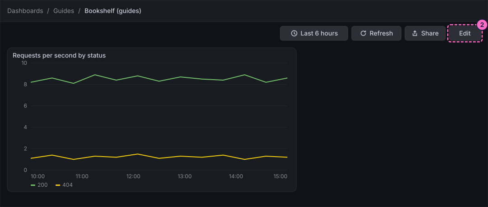
-
Click Add at the top left of the toolbar. The right sidebar opens on the Add pane.
-
Click the Panel tile ("Drag or click to add a panel").
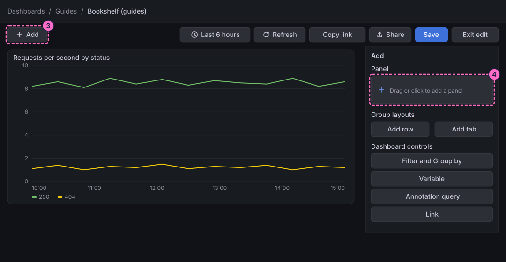
-
In the Panel pane that replaces the Add pane, click Edit visualization.
Show the error ratio as a stat
-
In query A, click Code in the Builder / Code switch.
-
Click inside the query editor first, so that it has the focus, then type the query. It divides the rate of the answers with a status from
500to599by the rate of all answers, andor vector(0)gives zero instead of No data when no request has failed:sum(rate(http_server_requests_seconds_count{application="bookshelf",status=~"5.."}[1m])) / sum(rate(http_server_requests_seconds_count{application="bookshelf"}[1m])) or vector(0) -
Click Run queries.
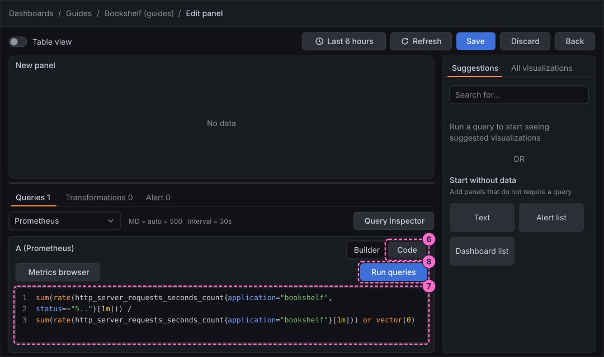
-
Under Suggestions, click Stat.
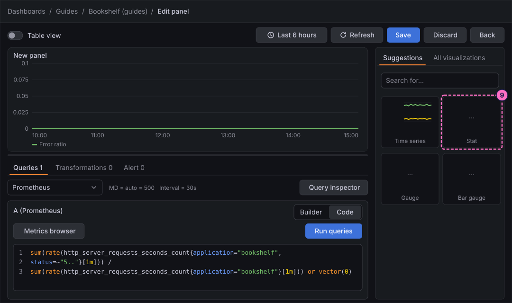
-
The right column becomes the options pane headed Stat. Under Panel options, type
Error ratioin Title. -
Open Standard options, click the Unit picker, type
percentin its search box and choose the entry for a percentage of a ratio between 0 and 1 (a value of 0.05 shows as 5%).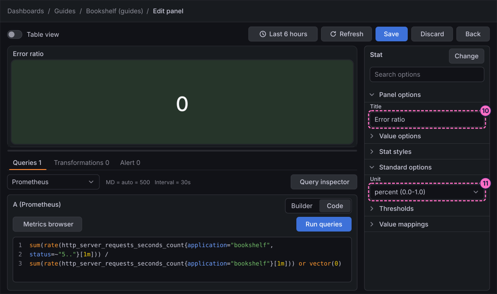
-
Open Value options. The panel gets one value per series by reducing its points. In Calculation, choose Max to show the worst value of the time range; the default shows the last one.
-
Open Stat styles. For Graph mode, click Area. The panel draws a sparkline behind the number.
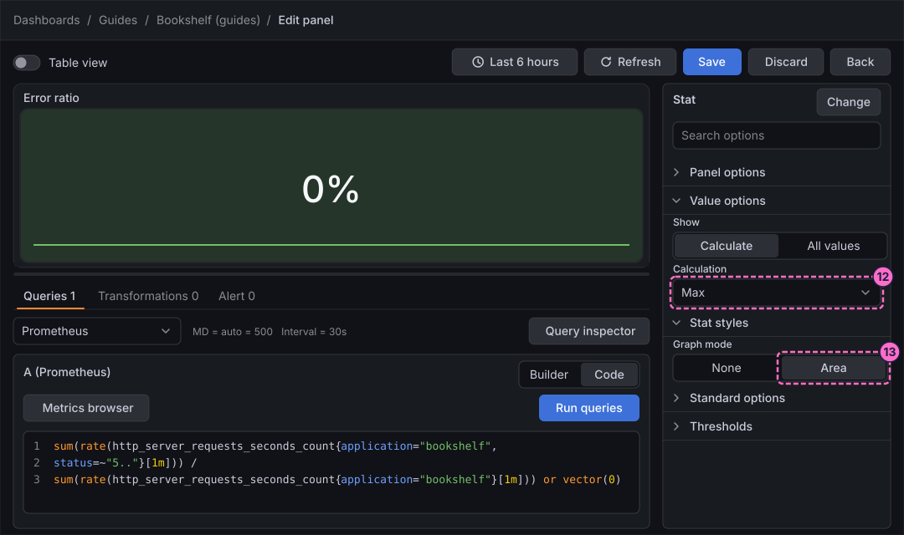
-
Open Thresholds. The list has a base step in green and a second step in red with the value
80. Replace80with0.05, so that the panel turns red when more than 5% of the requests fail.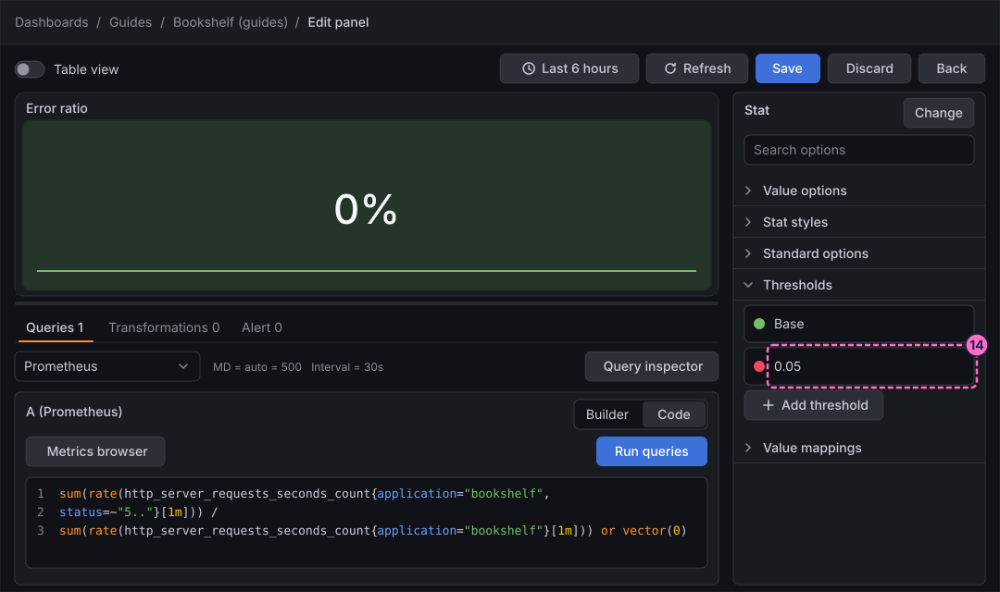
-
Open Value mappings and open the editor of the mappings. Add a mapping of the type value: for the value
0show the textNo errors. Confirm the editor. The panel now shows the text instead of0%.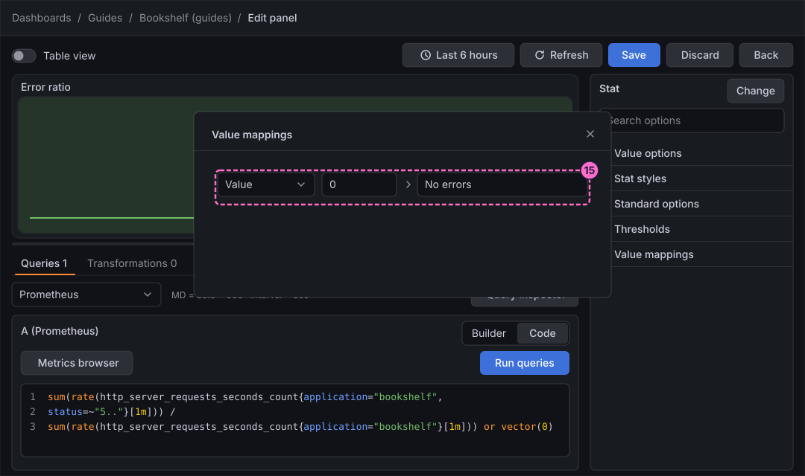
-
Click Back in the header of the editor. The panel is on the dashboard, which is still in edit mode.
Show the connection pool usage as a gauge
-
Add another panel with the button Add panel under the panels. The Add pane with its Panel tile, as in steps 3 and 4, does the same.
-
In the Panel pane, click Edit visualization.
-
In query A, click Code.
-
Click inside the query editor first, then type the query. It is the share of the pool in use, from 0 to 100, from the metrics
hikaricp_connections_activeandhikaricp_connections_max:100 * sum(hikaricp_connections_active) / sum(hikaricp_connections_max) -
Click Run queries.
-
Under Suggestions, click Gauge.
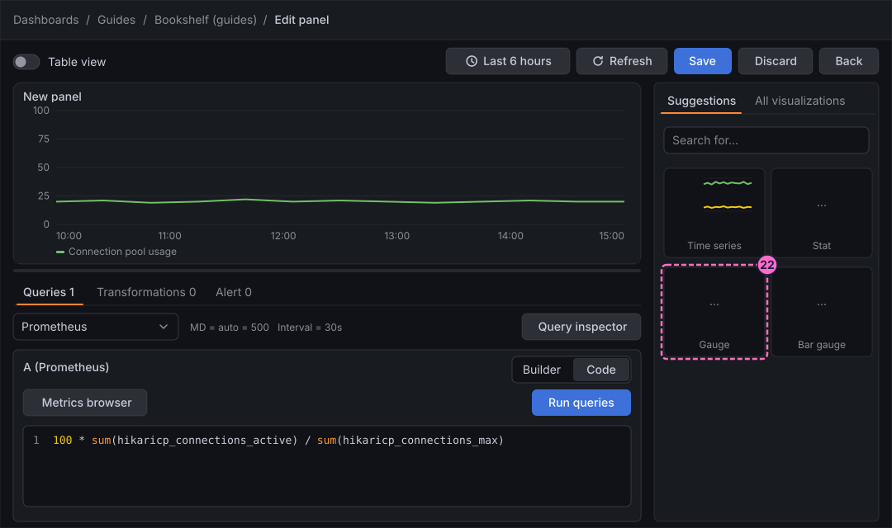
-
Under Panel options, type
Connection pool usagein Title. -
Open Standard options, click the Unit picker, type
percentand choose the entry for a percentage on a scale from 0 to 100. With that unit the gauge runs from 0 to 100 and the default red step at80is right as it is. -
Open Gauge. For Style, click Arc. Grafana 13 offers Circle and Arc; the same category has Orientation, Bar width factor, Segments, Bar Style, Text mode, Show sparkline, Show thresholds and Show labels.
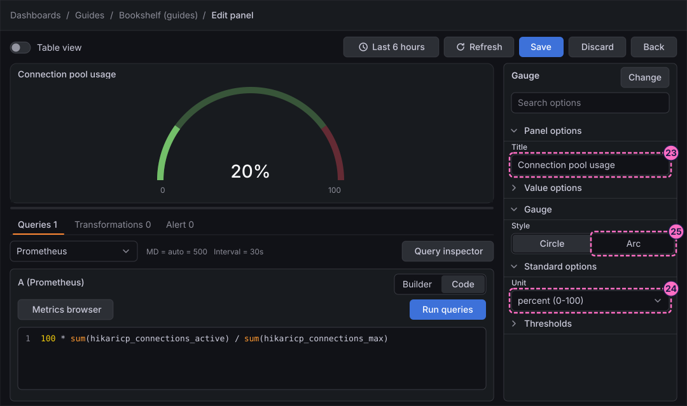
-
Click Back.
Show the request rate by URI as a bar gauge
-
Click Add panel under the panels.
-
In the Panel pane, click Edit visualization.
-
In query A, click Code.
-
Click inside the query editor first, then type the query. It returns one series per route,
/api/books,/api/books/{id},/api/loansand/api/search:sum by (uri) (rate(http_server_requests_seconds_count{application="bookshelf"}[1m])) -
Click Run queries.
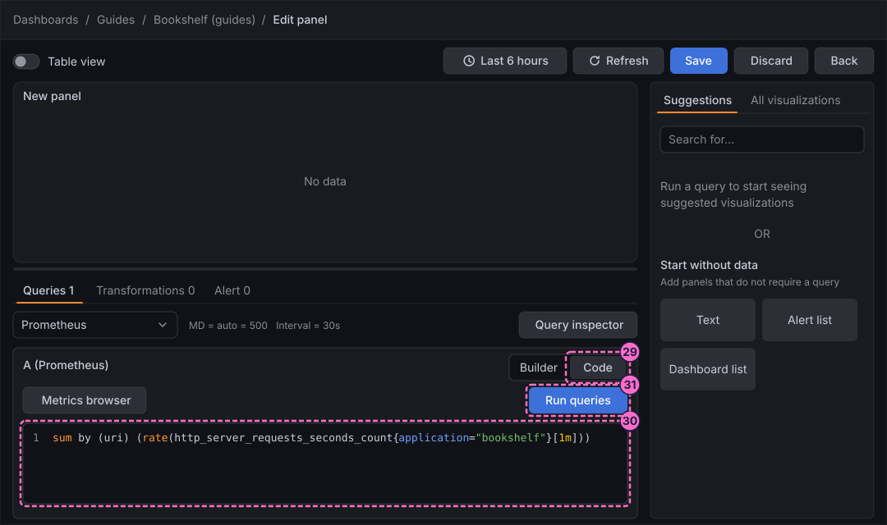
-
Under Suggestions, click Bar gauge.
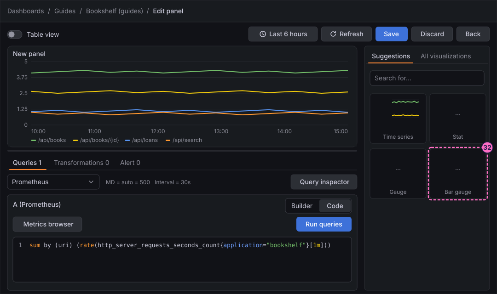
-
Under Panel options, type
Requests per second by URIin Title. -
Open Value options. In Calculation, choose Mean, so that each bar shows the average of its series over the time range.
-
Open Bar gauge. For Display mode, click Basic. The other modes are Gradient and Retro LCD; the category also sets Orientation, Value display, Name placement and Show unfilled area.
-
Click Save in the header of the editor. The 13.3 panel editor has no Apply button; Save saves the whole dashboard and Back returns to it.
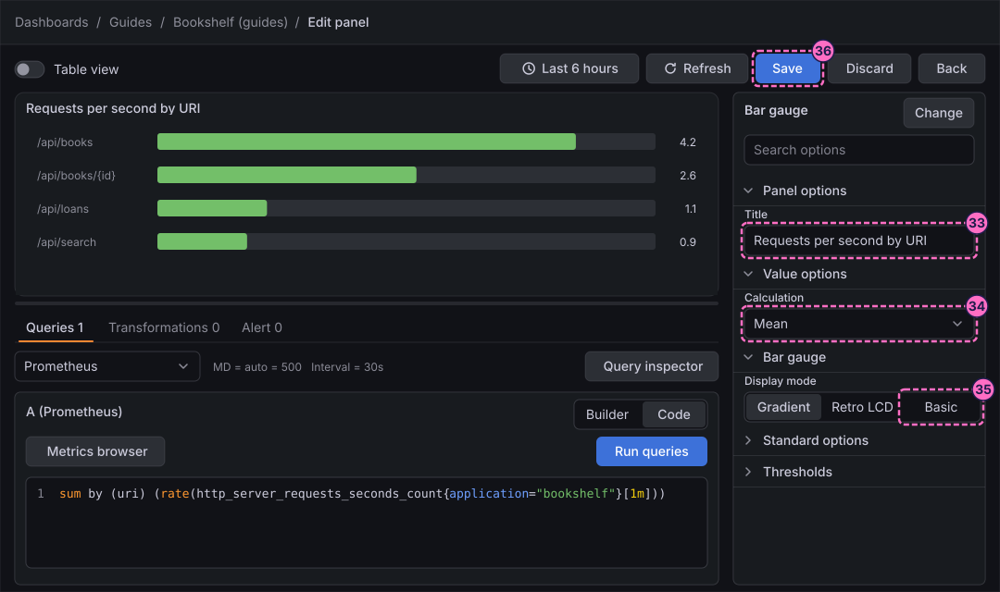
-
In the Save dashboard drawer, optionally type a note in Message and click Save.
-
Click Back.
-
Click Exit edit. If Grafana 13.3.0 shows the dialog Unsaved changes ("Do you want to save your changes?"), which it does even right after a save, click Save, and click Save again in the drawer that opens.
Check the result
Open Dashboards → Guides → Bookshelf (guides). The dashboard must show the stat Error ratio with the text No errors on a green background, the gauge Connection pool usage with an arc in green, and the bar gauge Requests per second by URI with one bar for each of the four routes.
To see the stat react, force errors and press Refresh after a minute: the text gives way to a percentage, and the stat turns red when it passes 5%. Restore normal traffic afterwards:
curl -X POST localhost:8090/mode/failing
curl -X POST localhost:8090/mode/normalcurl localhost:8090/ shows the current mode.
Variations
-
Set Text mode in Stat styles to show only the value or only the name, and Color mode to colour the value instead of the background.
-
In Gauge, turn on Show thresholds to draw the threshold steps on the scale, and Show sparkline to add a history under the value.
-
Set Orientation in Bar gauge to vertical, and Name placement to Top when the route names are long.
-
Use Percentage instead of Absolute in Thresholds mode so that the steps follow the minimum and maximum of the panel.
What can go wrong
| Symptom | Cause | Fix |
|---|---|---|
The stat shows No data |
The query has no |
Retype the query of step 7 with its last part |
The stat shows |
The value mapping is missing or maps another value, or the calculation does not give exactly 0. |
Open Value mappings and check that the mapping is of the type value, for |
The gauge shows a huge number or stays empty |
The unit is the percentage of a ratio from 0 to 1 while the query already multiplies by 100, or the metrics have no samples yet. |
Choose the percent unit for a 0 to 100 scale, and wait a minute after the lab starts. |
The bar gauge shows one bar per sample instead of per route |
Show in Value options is All values instead of Calculate. |
Set Show to Calculate and choose a Calculation. |
Exit edit keeps showing Unsaved changes |
Grafana 13.3.0 raises the dialog even after a save. |
Click Save, and Save again in the drawer; the dialog does not return once edit mode has closed. |
Clean up
Keep the dashboard: the following guides in this series use it. Send curl -X POST localhost:8090/mode/normal if you changed the mode of the load generator. To remove everything the lab stores, stop the
profile with docker compose --profile grafana down -v, which also deletes the volumes and therefore the dashboard.
Where to go next
-
Previous guide: Time series panels.
-
Next guide: Tables, which shows the same data as rows and columns.
-
Reference: Stats, Tables and Widgets describes every option of the stat, gauge and bar gauge panels.